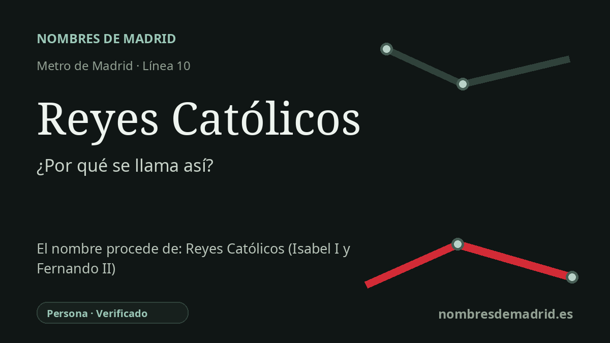

Publicado el · Investigación de Nombres de Madrid · Cómo verificamos cada origen · 7 fuentes consultadas
Respuesta rápida
Reyes Católicos toma su nombre de los Reyes Católicos, Isabel I de Castilla y Fernando II de Aragón. En San Sebastián de los Reyes el nombre tiene un sentido local especial: el municipio recuerda su fundación bajo su amparo real en 1492.
La historia del nombre
La estación de Reyes Católicos toma su nombre de los Reyes Católicos: la reina Isabel I de Castilla y el rey Fernando II de Aragón. En términos urbanos inmediatos, la referencia procede de la avenida de los Reyes Católicos, el eje local que identifica esta zona de San Sebastián de los Reyes.
El sentido más profundo del nombre es especialmente local. San Sebastián de los Reyes es uno de los lugares del área madrileña cuya memoria fundacional está ligada a Isabel y Fernando. La información municipal presenta las Fiestas del 2 de Mayo como aniversario de la fundación del municipio en 1492 y señala que la iglesia de San Sebastián Mártir se levantó sobre una ermita anterior, ya existente cuando el lugar fue fundado por los Reyes Católicos.
Según el relato tradicional, varias familias procedentes de la cercana Alcobendas se asentaron junto a la ermita de San Sebastián, en tierras bajo jurisdicción madrileña, buscando la protección real frente al poder señorial. Una publicación archivística regional resume la fundación como realizada por Real Cédula de los Reyes Católicos de 2 de mayo de 1492, bajo la protección del Concejo de Madrid. Los relatos locales y académicos posteriores desarrollan esa misma idea: un pequeño asentamiento bajomedieval pasó a ser una comunidad jurídicamente reconocida mediante intervención regia.
Los monarcas que dan nombre a la estación no son una referencia abstracta. Isabel nació en Madrigal de las Altas Torres en 1451 y murió en Medina del Campo en 1504; Fernando nació en Sos en 1452 y murió en Madrigalejo en 1516. Su matrimonio de 1469 y su gobierno conjunto unieron intereses dinásticos de Castilla y Aragón, aunque cada corona conservó sus propias estructuras políticas. Su reinado se asocia además a un año decisivo y controvertido de la historia española: la toma de Granada en enero de 1492, el decreto de expulsión de los judíos en marzo y el viaje de Colón hacia el oeste ese mismo año.
La estación abrió el 26 de abril de 2007 dentro de MetroNorte, la prolongación septentrional de la línea 10 hacia Alcobendas y San Sebastián de los Reyes. No se ha encontrado un nombre anterior para la estación. La etimología es, por tanto, segura, pero la formulación más precisa es que la estación se llama así por la avenida local dedicada a los Reyes Católicos, con un valor añadido porque esos monarcas ocupan un lugar central en el relato fundacional del municipio.